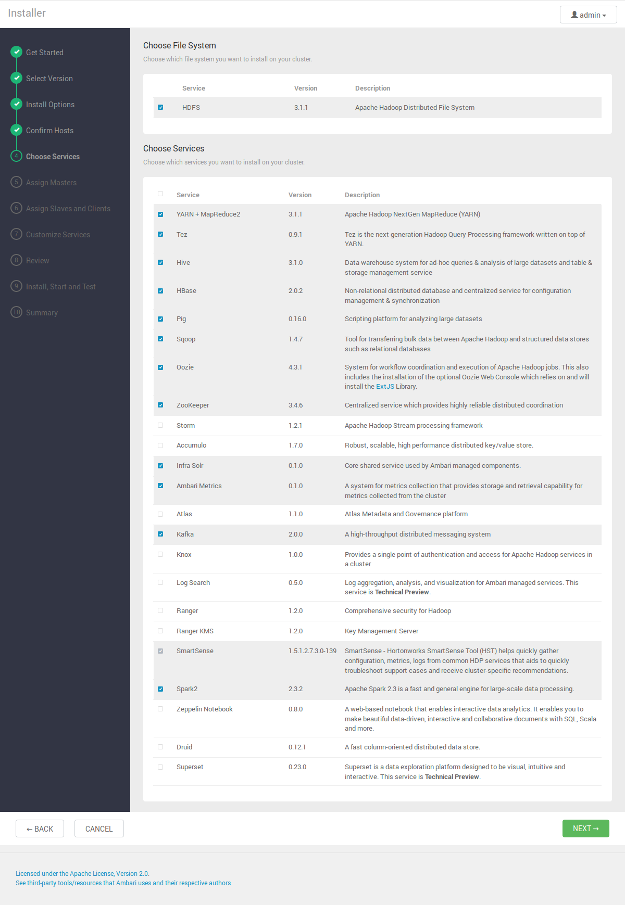
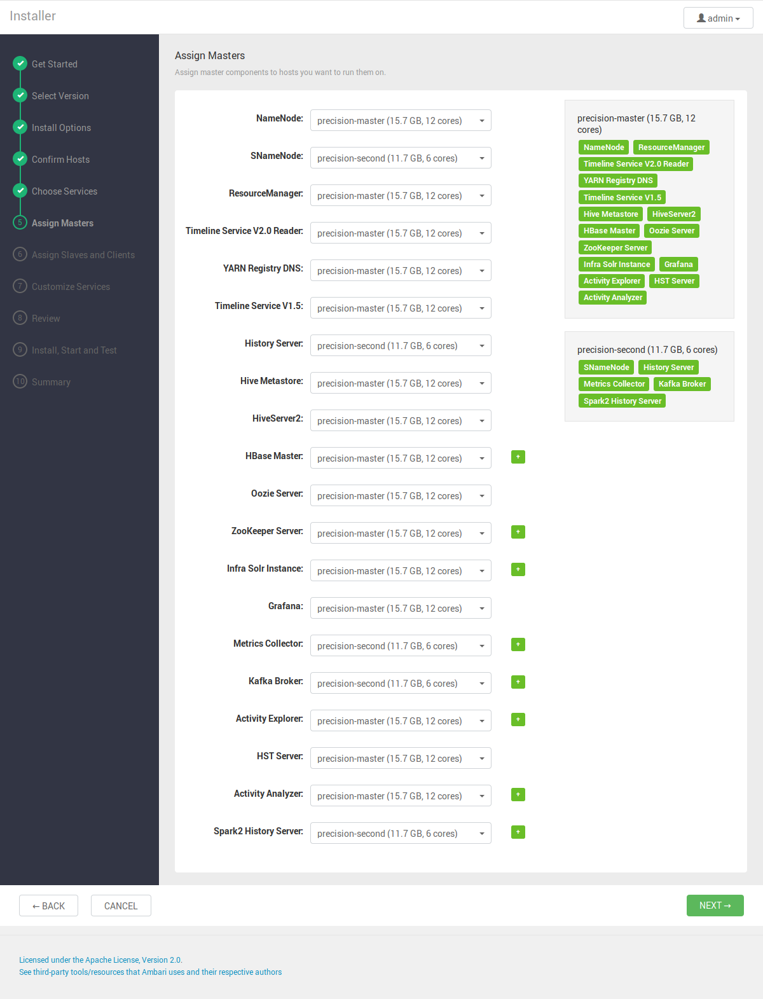

Prerequisites
Hostname Binding sample
Hosts file location on linux /etc/hosts
148.61.31.2 precision-master
148.61.31.8 precision-second
148.61.31.134 thinkcenter
148.61.31.121 optiplex1
148.61.31.142 optiplex2
148.61.31.189 optiplex4
SSH setup
ssh-keygen -t rsa - Generating Key on Master Node
ssh-copy-id -i $HOME/.ssh/id_rsa.pub uid@slavehostname(or)slaveip - Copy the master node’s ssh key to slave’s authorized keys. Repeat this for the rest of slaves.
Login to the individual slave and repeat the process until all the keys are added in permutation -- master-salves, slave-master and slave-slaves.
Privisioning with 
wget -O /etc/apt/sources.list.d/ambari.list public-repo-1.hortonworks.com/ambari/ubuntu18/2.x/updates/2.7.3.0/ambari.list - Adding Ambari repository file to /etc/apt/sources.list.d
The repository file may require to be updated depend on ambari version and linux distrubtion of the master node. The current one is for ubuntu 18.04 and ambari version is 2.7.3.
apt-key adv --recv-keys --keyserver keyserver.ubuntu.com B9733A7A07513CAD - Add the GPG keys of repo to the server
sudo apt install ambari-server - Installing Ambari Server debian-based packages
sudo ambari-server setup- run Ambari Server daemon as root .
Open localhost:8080 in browser and follow the wizard to provision the cluster:
Please refer to Ambari original documentation for the configuration: ambari.apache.org
Screenshots from the previous wizard
Service can be added after the provising. Advised to choose core services to keep the deployment simple and also make troubleshoot easy if something happened in mid-way. 
Assigning Masters
When choosing node for clients applications, consider the Master node if there is no dedicated edge node for them. Co-locating the client applications with services on master can avoid potential problem in slave node because data nodes/node managers are worker nodes those required to process intensively depend on the task assigned by resource manager.
